RARM
Confidence-Gated Progress Reward Modeling for RL in Manipulation
Motivation
Method
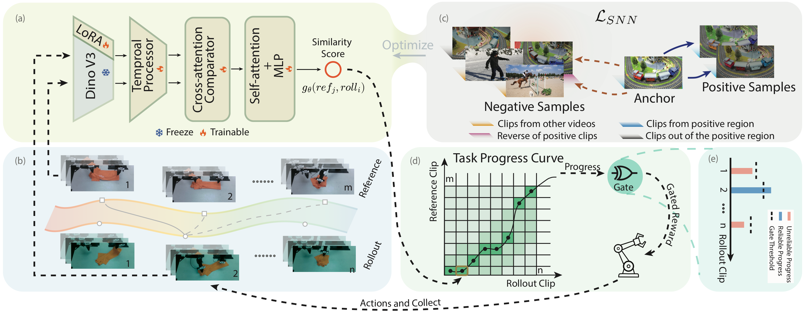
Quantitative Experiments
Success rate vs. environment steps on MetaWorld and LIBERO-10 tasks (mean ± std over seeds). Hover the legend to highlight a method; click to toggle it.
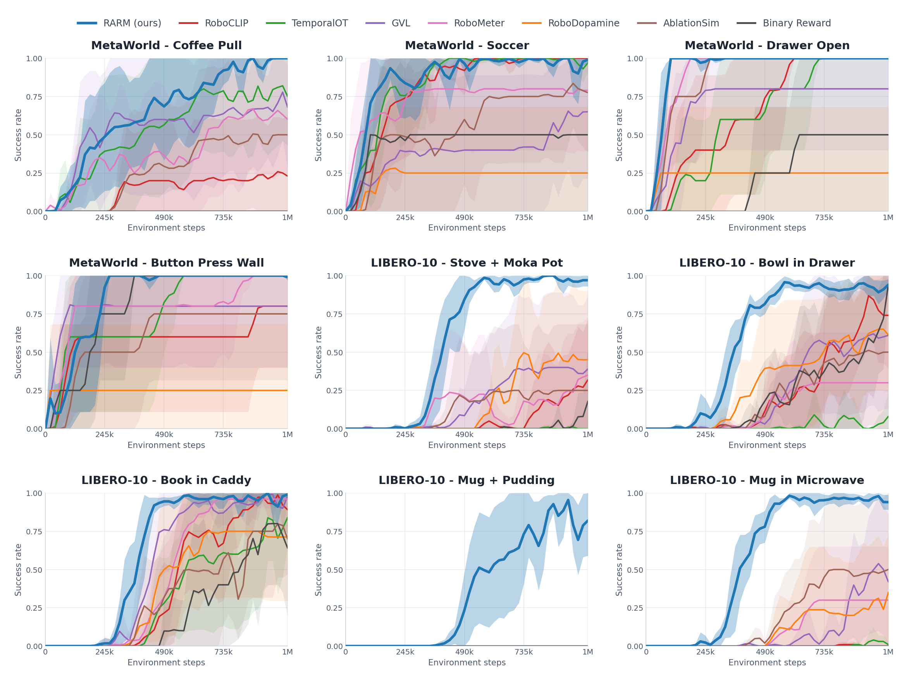
Ablation
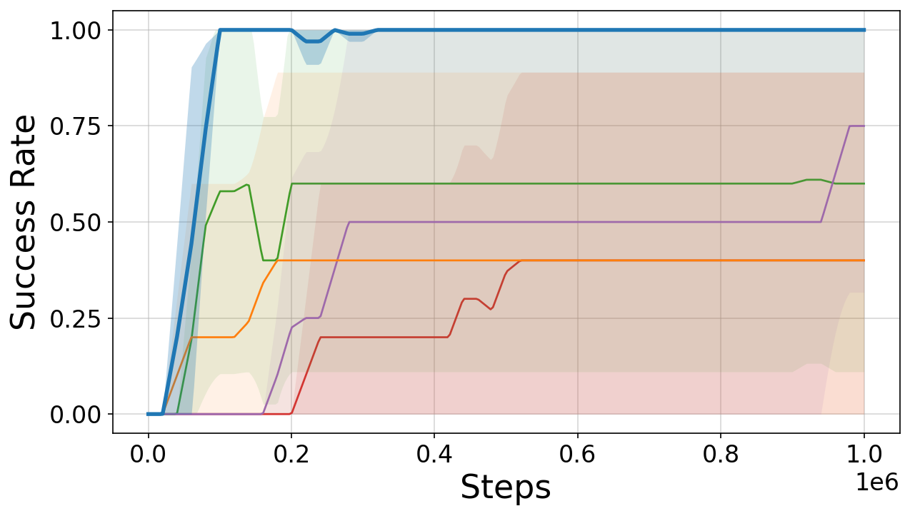
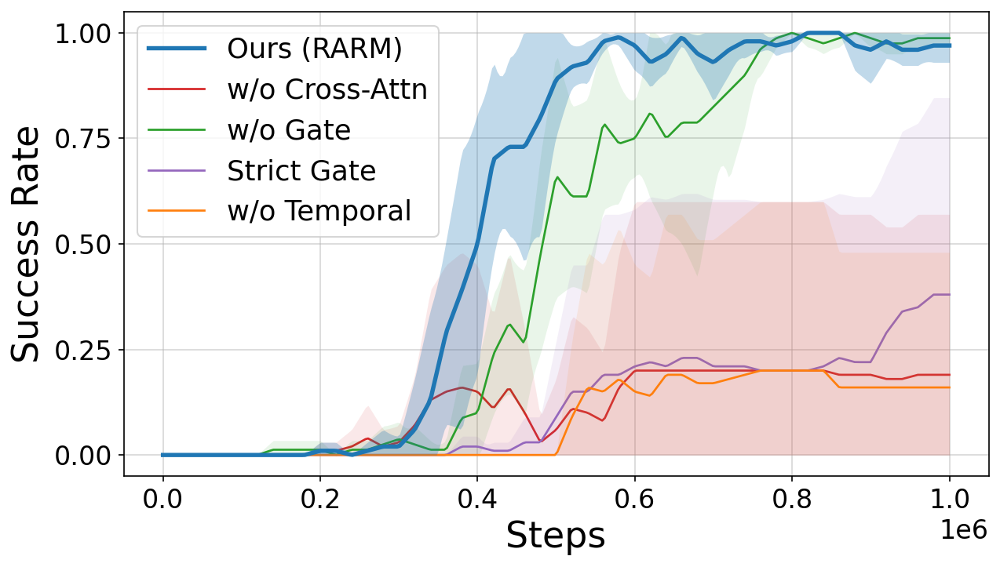
Each variant disables one part of RARM. The full model (blue) reaches a high success rate the fastest and holds it. w/o Cross-Attn drops the demonstration reference, so progress is ungrounded; w/o Temporal loses motion cues and rewards static frames that merely look like success. The confidence gate is the key factor: without it (w/o Gate) noisy frame matches inject spurious reward and convergence slows, while an over-strict gate (Strict Gate) rejects too many frames and starves the policy — both plateau well below RARM.
DSRL with RARM
Progress Prediction on Cloth Folding

Cumulative predicted reward on a paired success / failure cloth-folding rollout, normalized per model by its own success-rollout final reward. Reward is accrued only when newly estimated progress exceeds the previous highest estimate, so each curve is monotonically non-decreasing — transient mis-predictions cannot inflate it. Ours (red) tracks the linear oracle on success and saturates at just 0.50 on failure, while every baseline assigns more than 80% of its success reward to the failed rollout (GVL 0.97, Robometer 0.88, RoboDopamine 0.84, VIP 0.82) and cannot separate the two. Removing the per-clip similarity threshold (Ours w/o threshold) accepts every nearest-demo match as confident, and the failure rollout then earns more reward than success (ratio ≈ 1.89) — confirming that confidence-gated progress estimation is what makes success and failure distinguishable.
Real-World Success Rates
Success rates over 10 evaluation rollouts before and after 30/60/90 DSRL training episodes. w/o DSRL: base VLA policy. BinR: DSRL with sparse binary success reward. Ours: DSRL with the proposed RARM reward.
| Task | w/o DSRL | 30 rollouts | 60 rollouts | 90 rollouts | |||
|---|---|---|---|---|---|---|---|
| BinR | Ours | BinR | Ours | BinR | Ours | ||
| Drawer open | 2/10 | 4/10 | 6/10 | 6/10 | 7/10 | 8/10 | 10/10 |
| Pick eraser | 2/10 | 3/10 | 6/10 | 5/10 | 8/10 | 8/10 | 9/10 |
| Hand over | 2/10 | 2/10 | 5/10 | 4/10 | 6/10 | 5/10 | 6/10 |
| Clothes folding | 1/10 | 0/10 | 1/10 | 1/10 | 3/10 | 2/10 | 8/10 |
Robustness for RARM
RARM produces stable progress estimates under diverse visual perturbations. Starting from a successful bimanual clothes-folding rollout, we apply four augmentations targeting distinct real-world failure modes and re-estimate progress against an unaltered reference. In all cases the estimated progress closely tracks the ideal linear trend.
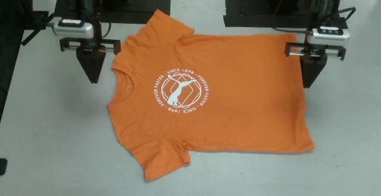
shirt
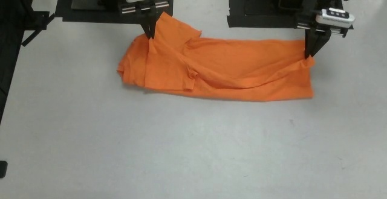
first fold
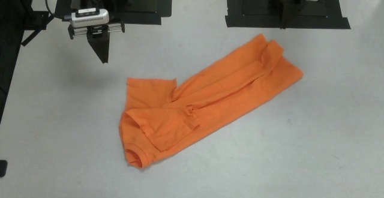
45° rotation
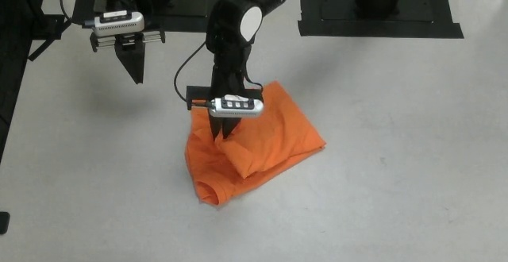
near side
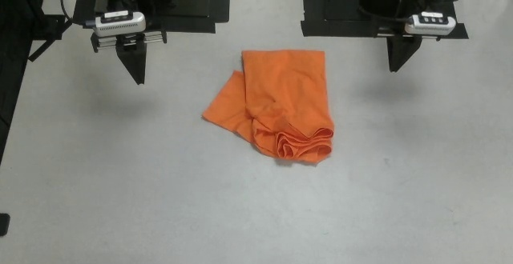
shape
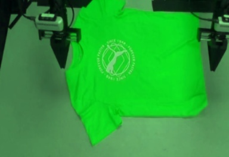
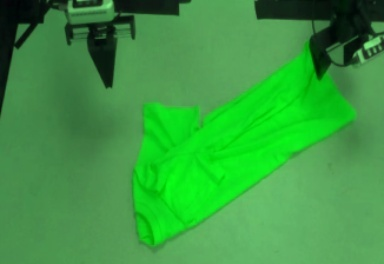
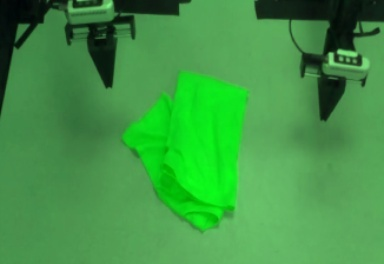
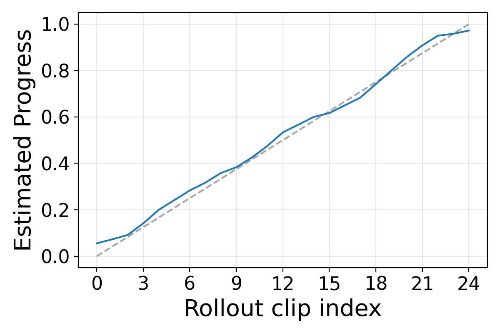
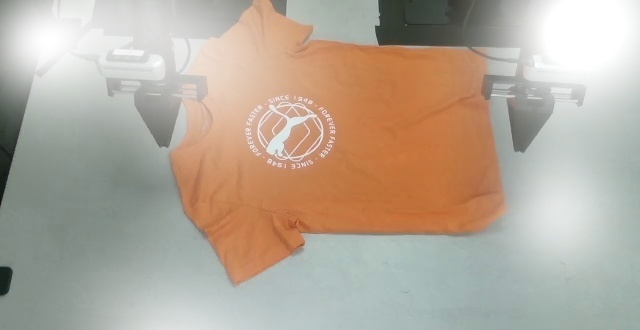
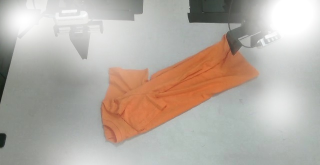
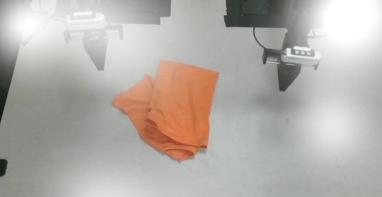
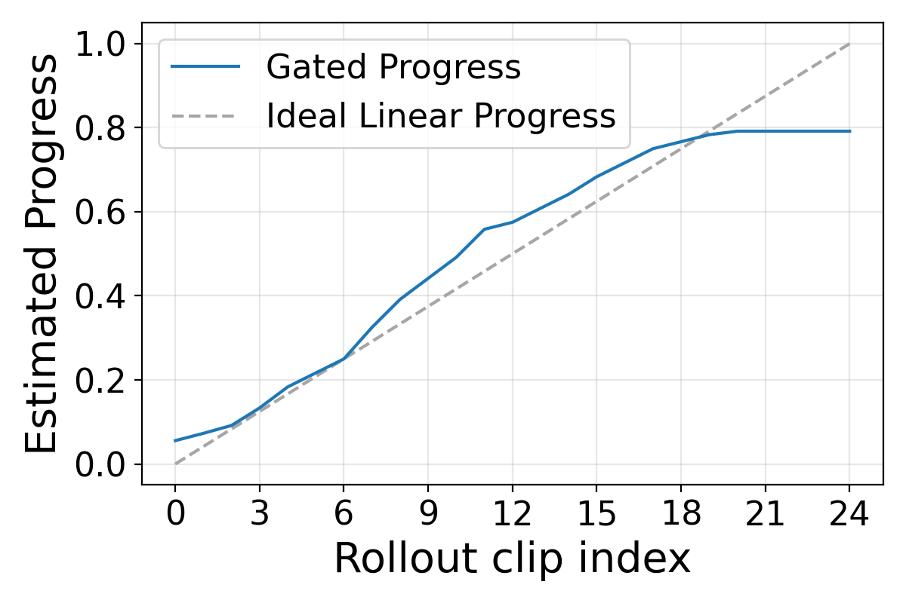
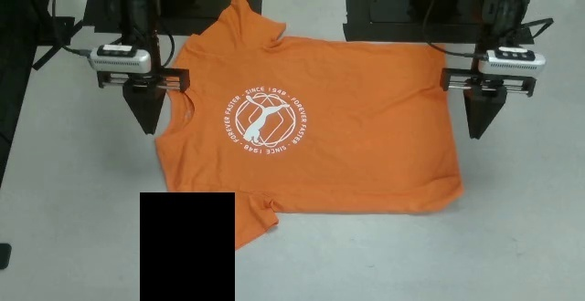
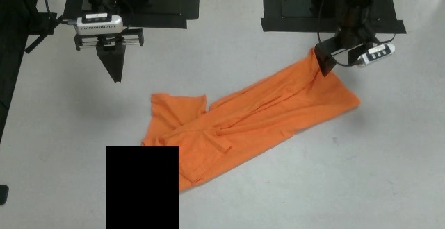
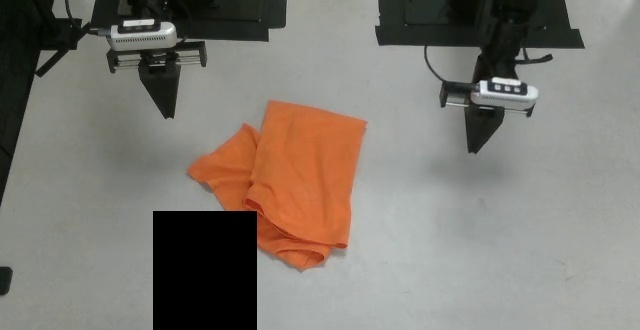
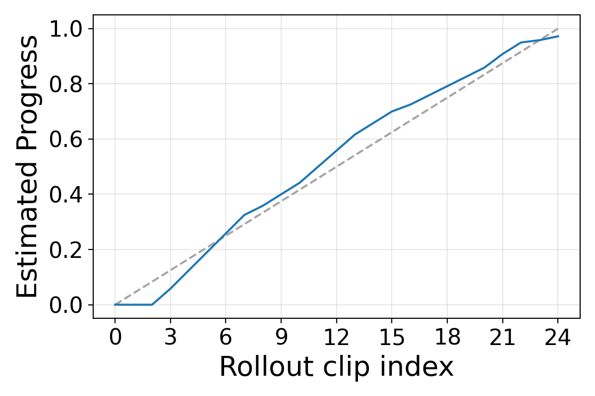
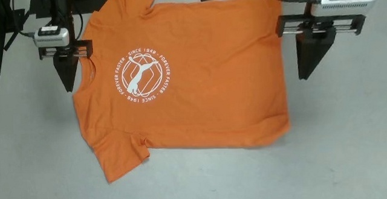
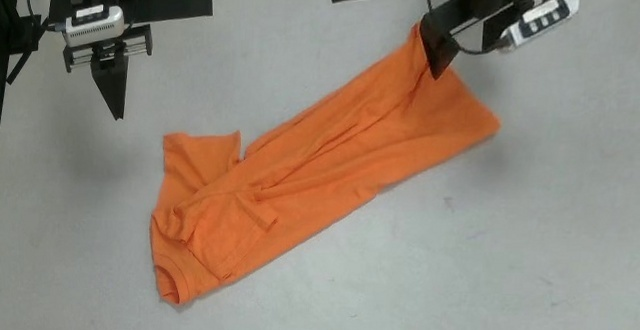
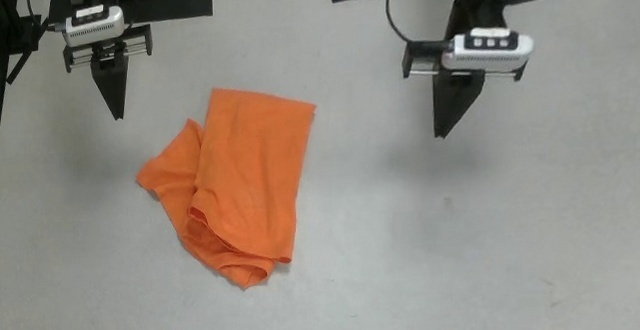
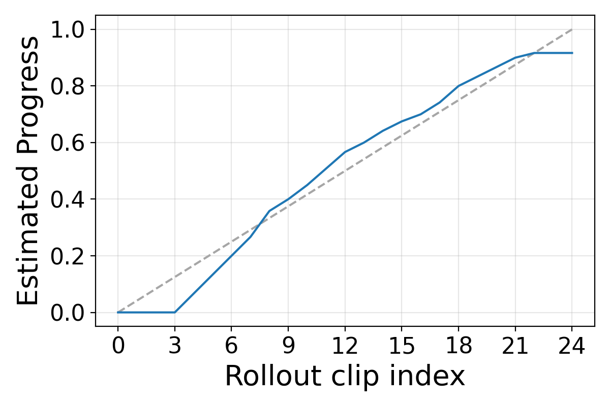
Inference Speed and GPU Cost
Per-frame inference cost and peak GPU memory across reward model baselines, measured over 125 frames (one rollout trajectory). RARM matches the fastest vision-encoder baselines while using far less memory than VLM-based methods.
| Baseline | ms / frame | Mem (MB) |
|---|---|---|
| GVL | <50 | ≈13 200 |
| Robometer | <100 | ≈13 200 |
| RoboDopamine | <300 | ≈19 000 |
| VIP | <10 | ≈4 200 |
| RoboCLIP | <10 | ≈5 400 |
| TemporalOT | <10 | ≈6 600 |
| RARM (Ours) | <10 | ≈5 100 |